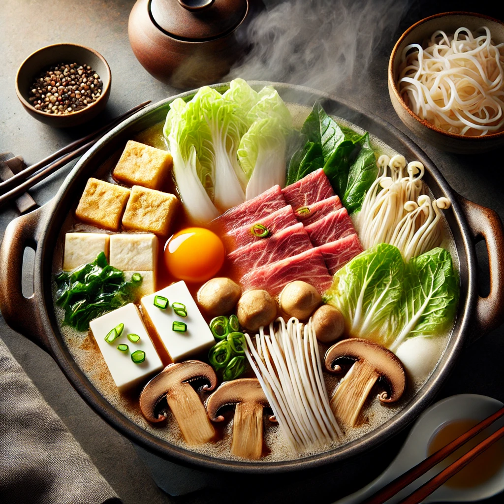

すき焼き

A traditional Japanese hot pot with savory-sweet flavors
This dish is commonly enjoyed with friends and family. It combines thinly sliced beef, tofu, vegetables, and noodles cooked in a sweet-savory broth.
Ingredients:
- 200g thinly sliced beef
- 1/4 cup soy sauce
- 1/4 cup sake
- 2 Tbsp sugar
- 1/4 cup mirin
- 1 block tofu, cubed
- 100g shirataki noodles
- 1 bunch green onions, chopped
- 1/2 small napa cabbage, chopped
- 2 shiitake mushrooms, sliced
- 1 raw egg (optional for dipping)
Steps:
- In a hot pot, mix soy sauce, sake, sugar, and mirin. Bring to a boil and reduce to low heat.
- Add tofu, noodles, green onions, cabbage, and mushrooms to the pot. Let simmer for 3-5 minutes.
- Add beef slices and cook until just browned.
- Once everything is cooked through, serve immediately. For added authenticity, dip each bite in raw egg (optional).